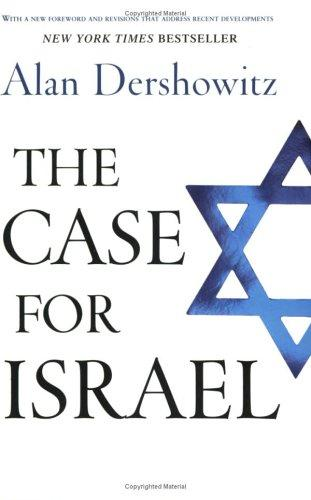
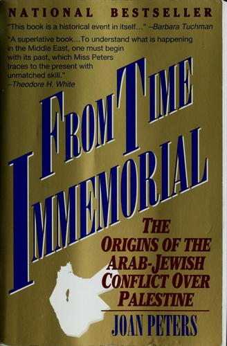
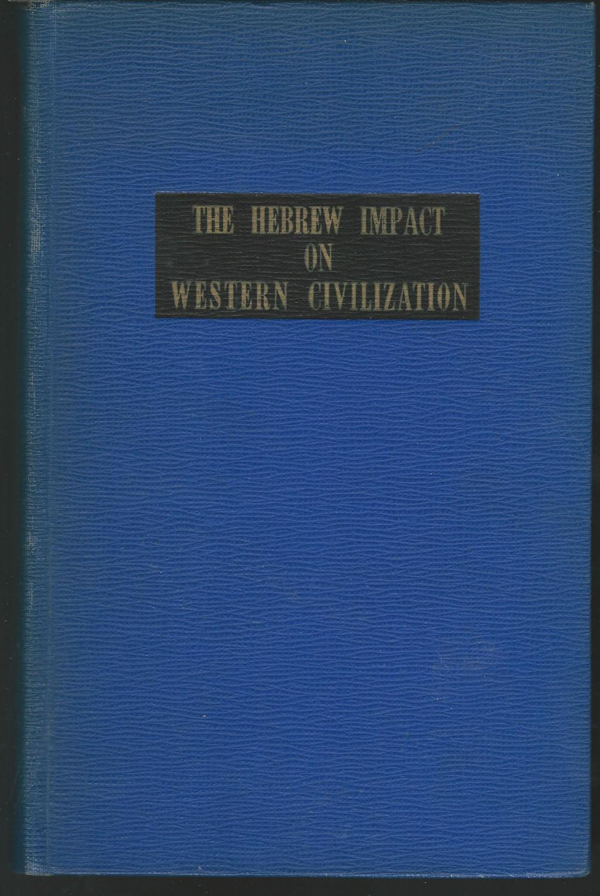

45:18 · 6 OPERE
Il dovere della luce.
Il filo del discorso
Il dovere della luce è, nel percorso del relatore, la responsabilità di cercare strumenti per capire anche quando l’attualità sollecita una adesione immediata. Il discorso parte dalla crisi mediorientale e dalla critica alle appartenenze politiche, passa per Destra e sinistra di Bobbio e propone l’immagine della tempesta di sabbia: il presente può rendere difficile vedere le proporzioni degli eventi. Una storia di colleghi serve a distinguere, nella sua lettura, sentimento e sentimentalismo. La parte centrale presenta The Case for Israel e commenta un confronto televisivo fra Dershowitz e Finkelstein, interpretandone polemicamente le accuse e le risposte. Un aneddoto universitario e il problema delle citazioni diventano esempi del rapporto fra curiosità, competenza e buona fede. La conclusione mostra The Hebrew Impact on Western Civilization e invita a costruire una biblioteca capace di ampliare lo sguardo. La scheda attribuisce al relatore i giudizi politici e le ricostruzioni controverse, distinguendo verifica bibliografica, testimonianza personale e accertamento dei fatti storici.
I libri nel discorso

Destra e sinistra. Ragioni e significati di una distinzione politica
Copertina: Donzelli, Saggine, edizione del trentennale 2023, ISBN 9788855224659, prefazione di Nadia Urbinati; copertina con autore, titolo, sottotitolo e indicazione della edizione. Opera originaria del 1994, distinta dalle successive prefazioni e ristampe.
Immagine autentica dell’opera, controllata visivamente; l’edizione di riferimento non è attribuita al filmato.
Titolo e autore espliciti; giudizio critico del relatore e ricordo di successive prefazioni.
Passaggio 3:17 ↗ · Fonti e libro ↗
The Case for Israel
Copertina: John Wiley & Sons, prima edizione 2003, ISBN 9780471465027. La copertina riprodotta riguarda la brossura riveduta 2004, ISBN 9780471679523, con nuova prefazione e revisioni dichiarate; non viene identificata con la copia del relatore.
Immagine autentica dell’opera, controllata visivamente; l’edizione di riferimento non è attribuita al filmato.
The Case for Israel e Alan Dershowitz espliciti; non si identifica la edizione della copia personale.
Passaggio 16:20 ↗ · Fonti e libro ↗L’industria dell’Olocausto (The Holocaust Industry). Reflections on the Exploitation of Jewish Suffering
Copertina: Immagine della edizione inglese Verso in brossura, maggio 2024, 304 pagine.
Copertina autentica Verso bianca e grigia, titolo nero fra barre orizzontali e nome Norman G. Finkelstein. È la edizione di riferimento 2024 del catalogo corrente, non necessariamente il libro richiamato nel video. Il giudizio ostile del relatore non viene confuso con una classificazione bibliografica del volume come negazionismo.
Titolo e autore nominati durante la polemica sul dibattito.
Passaggio 21:00 ↗ · Fonti e libro ↗
From Time Immemorial. The Origins of the Arab–Jewish Conflict over Palestine
Identificazione probabile
Copertina: Prima edizione Harper & Row, 1984. Immagine della edizione distribuita da Jonathan David, ISBN 9780963624208, 612 pagine secondo il catalogo del distributore, senza attribuire un anno non dichiarato. Le tesi promozionali del catalogo non costituiscono una verifica delle conclusioni storiche del libro.
Immagine autentica dell’opera, controllata visivamente; l’edizione di riferimento non è attribuita al filmato.
Opera di Peters non nominata per titolo nella trascrizione automatica; identificazione probabile attraverso il dibattito originale richiamato.
Passaggio 20:02 ↗ · Fonti e libro ↗
The Innocents Abroad
Identificazione probabile
Copertina: Penguin Classics · 2002 · inglese
Immagine autentica dell’opera, controllata visivamente; non identifica l’edizione usata nel video.
Passo di Twain sulla Palestina nel contesto delle citazioni del dibattito: identificazione probabile, titolo non pronunciato.
Passaggio 28:37 ↗ · Fonti e libro ↗
The Hebrew Impact on Western Civilization
Legatura editoriale del 1951, senza sovraccoperta: New York, Philosophical Library, 1951, 922 pagine, raccolta curata da Dagobert D. Runes. Fotografia di una legatura editoriale blu con riquadro nero e titolo dorato, senza sovraccoperta, dichiarata dal venditore come prima edizione; non una copertina di ristampa Greenwood né un frontespizio. Nessun ISBN attribuito alla edizione del 1951.
Immagine autentica della legatura dell’esemplare descritto dal venditore. Il titolo è leggibile sul riquadro; autore-curatore e dati editoriali sono riscontrati nei cataloghi. Non si identifica questo esemplare con quello del relatore.
Titolo, Runes, editore Philosophical Library e anno 1951 espliciti; lettura di temi dell’indice.
Passaggio 35:53 ↗ · Fonti e libro ↗